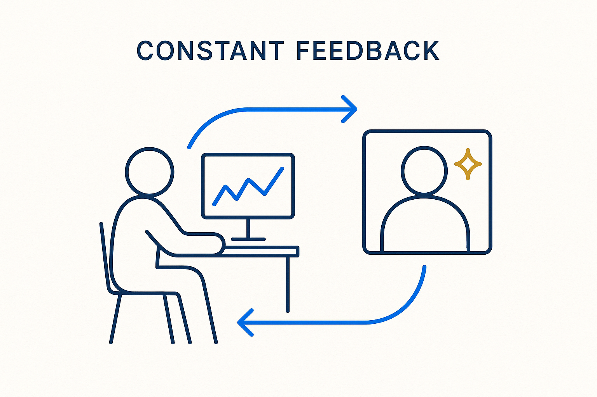

The loop that keeps abstract work honest — constant, structured feedback from the people who own the domain, not a review at the end.

> The loop that keeps abstract work honest — constant, structured feedback from the people who own the domain, not a review at the end.
Feedback is the mechanism that stops the abstract thinkers from confidently building the wrong thing. Because a modeler can produce a clean, internally consistent model of a business they have half-understood, the only reliable correction is the people who actually own the domain — and the only way to get it is to ask for it constantly, not once at the end. A model that has been checked, challenged and corrected along the way is trustworthy for exactly that reason.
For feedback to work it has to be cheap to give and easy to act on. That means the deliverable must be understandable on both sides — a visual, plain-language view the expert can react to, backed by the structured markdown, YAML and rules the machine acts on. If the domain expert can’t read it, they can’t correct it, and the feedback loop never closes.
Structured well, feedback stops being an event and becomes a loop: capture the correction, fold it back into the source, regenerate everything downstream, show the new version, ask again. The same discipline that lets AI prepare a meeting also lets the meeting produce feedback that lands somewhere durable instead of evaporating in a hallway. Feedback is not politeness; it is how structure stays true to the world it models.
Where it lives: the attitude layer of Breakthrough Modeling — the loop that keeps the model honest.